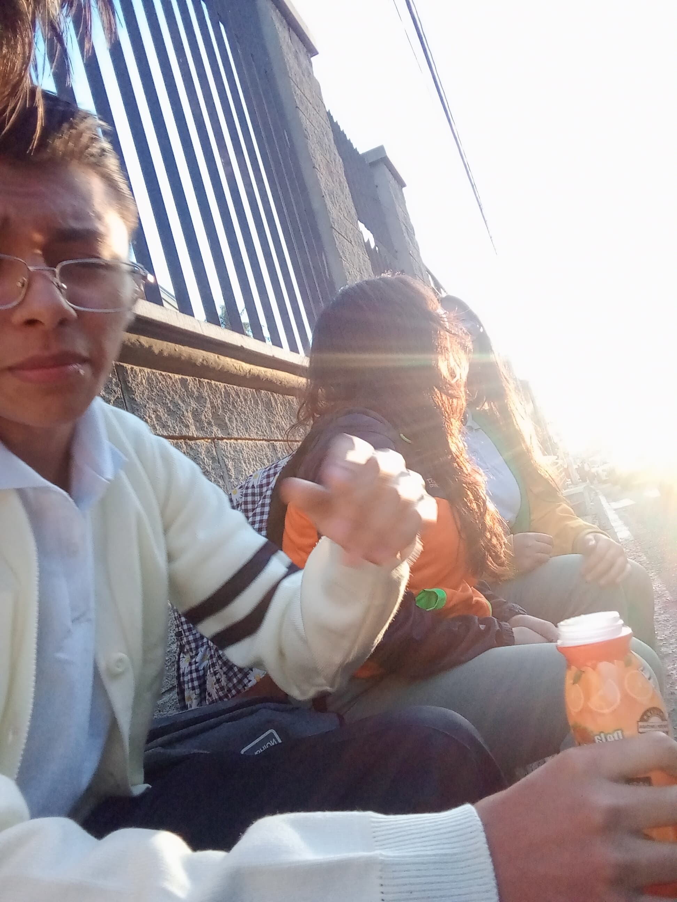

Proyecto de Vida
Viviana Noemi Vásquez Arriola
Este proyecto de vida refleja mis metas, logros, valores, visión, misión y las áreas prioritarias en mi vida. Aquí comparto mi viaje personal y profesional hacia un futuro significativo y exitoso.
Personalidad
¿Quién soy yo?
Mi nombre es Viviana Noemi Vásquez Arriola, los valores que me definen son:
- Alegría
- Amor
- Cariño
- Tranquilidad
Una de mis mayores metas es:
- Aprender más de cuatro idiomas
Al igual que mis habilidades destacadas son:
- Sé cocinar
- Sé oír a las demás personas y me gusta poder ayudarlas
Soy alérgica a:
- La crema de maní
- A la aspirina
Se me dificulta:
- Ver, tengo miopía y astigmatismo, por eso uso lentes.
Personas que me motivan:
- Dios, mis papás y mis hermanas
Autorretrato
¡Hola! Mi nombre es Viviana Noemi Vásquez Arriola. Soy una persona alegre, amorosa y cariñosa. Me encanta aprender y ayudar a los demás. Una de mis metas es aprender más de cuatro idiomas y disfrutar de la vida con tranquilidad.
En mi tiempo libre, disfruto cocinar y escuchar a las personas para poder brindarles mi apoyo. Aunque tengo miopía y astigmatismo, uso lentes que me ayudan a ver mejor. Tengo alergias a la crema de maní y a la aspirina, por lo que siempre llevo precauciones.
Mis mayores motivaciones son Dios, mis padres y mis hermanas. Ellos son mi inspiración para seguir adelante y alcanzar mis metas.
Acróstico
Viviana
Vibrante y llena de energía,
Inspirando a los que están cerca,
Vuela alto en cada sueño,
Ideas brillantes siempre tiene,
Amiga leal y confiable,
Nunca se rinde, siempre lucha,
Amor y alegría en su camino deja.
Biografía
Esta línea de tiempo representa los momentos más importantes de mi vida, desde mi nacimiento hasta eventos significativos que han marcado mi desarrollo personal y académico.
2007
Nacimiento
El 16 de diciembre del 2007 nací, cuenta mi mamá que fue un gran dia para ella. Después de pasar tantas situaciones difíciles en el vientre de mi madre logré estar con ella, claro, gracias a la ayuda de Dios.
2015
Inicio de la primaria
Empecé el ciclo escolar de primaria, recuerdo, se me dificultó hacer amigos durante un largo tiempo, aunque, ese haya sido el único colegio en donde había estado, hasta que conocí a mi mejor amiga en la actualidad, aunque ya no nos vemos tanto, ella sigue siendo una de las mejores personas que conocí.
2023
Secundaria
Cursé los dos primeros años de básicos en el mismo colegio de siempre, en el último año por primera vez experimenté un cambio, ya que, me transfirieron a un nuevo colegio, logré hacer amigos más rápido que en otras ocasiones, era un grupo muy grande de compañeras, las quise mucho y teníamos una linda convivencia, hasta que a finales de año tuvimos un conflicto que hizo que nos dividieramos, prácticamente me habia quedado sola otra vez, pero una de ellas decidió quedarse conmigo y en la actualidad es una de las personas que más quiero y por consiguiente es mi mejor amiga, es una linda amistad, que siempre se preocupa por mí, este último año, cambió de colegio, estamos a distancia, pero todos los días hablamos como si siempre estuvieramos juntas y nuestros recuerdos parecen estar intactos.
2025
Bachillerato
Sigo en el mismo colegio desde que me cambiaron. El año pasado, me llevaba bien con mi grado, sin embargo, no tenía amigos como tal, y me gustaba juntarme demasiado con personas que conocí de otros grados, tuve dos nuevos amigos de tercero básico, siempre nos juntabamos a la hora de recreo y nos divertíamos mucho juntos, este año tuvieron que cambiarse de colegio ya que están cursando una carrera que no se encuentra en el colegio donde estoy, nos seguimos viendo todas las mañanas y no perdemos la escencia de nuestra amistad, al igual que habían algunos con los que siempre me llevé desde tercero básico ellos eran mi vida social, aún miraba a mi mejor amiga que todavia estaba, pero estudiaba en la tarde. Este año, empecé fortaleciendo amistades con personas que en el pasado apenas y nos hablábamos y ahora nos juntamos siempre cuando se nos pide que hagamos grupo, ya es mi último año de carrera.
Mi Visión
Me veo trabajando en una empresa la cual me permita relacionarme con los números, la lógica y la estrategia, que son cosas que me gustan hacer. En lo familiar quiero seguir manteniendo una linda relación con mis papás. Tengo una relación con un futuro prometedor de querer casarnos y tener muchos hijos, donde el respeto, la confianza y cordialidad resaltan, él es aceptado como alguien bueno para mí por mis papás y logramos tener un equilibrio entre nuestro tiempo de trabajo y familia.En el área espiritual, me veo más cerca de Dios fortaleciendo mi religión cristiana voy a la iglesia con TODA mi familia los domingos en las mañana y luego, estaríamos disfrutando de un almuerzo juntos. Al igual que sé varios idiomas, ya que me sigue gustando aprender cada vez más nuevas lenguas, por lo tanto, viajo cada que tengo la oportunidad y lo disfruto con la gente que quiero que estén a mi lado. Anhelo tener una buena estabilidad económica, en donde me pueda permitir cumplir mis gustos, también, brindo a mis papás todo lo que necesitan y deseen, como un día ellos lo hicieron por mí.
Mi Misión
Crecer constantenmente, conforme a los esfuerzos que me va a generar elevarme hasta llegar al punto máximo en el que yo me sienta conforme conmigo misma, al igual que ser una persona más nutrida de valores. Quiero ayudar al crecimiento económico del país y hacer que este sea de abundantes oportunidades para las demás personas con ideas y emociones de querer mejorar en los ámbitos importantes de sus vidas.
Aliados
Conoce a las personas e instituciones que me han acompañado y apoyado en mi camino.
Aliados
Social
- Amigos
- Conocidos
Académico
- Amigos
- Papás
- Hermanos
Laboral
- Jefe
- Compañeros
Espiritual
- Dios
- Familia
Fisíco
- Amigos
- Tíos
Emocional
- Dios
- Amigos
- Hermanos
Económico
- Jefe
- Papás
Familiar
- Papás
- Hermanas
- Tías
Mis Valores
Estos son los valores que guían mi vida y mis decisiones.
Valores
Laboral
- Puntualidad
- Responsabilidad
Espiritual
- Amor
- Paz
Social
- Respeto
- Amabilidad
Fisíco
- Responsabilidad
- Perseverancia
Académico
- Sinceridad
- Responsabilidad
Familiar
- Amar
- Respeto
Económico
- Responsabilidad
- Humildad
Generosidad
- Perseverancia
- Paz
Mis Estrategias
Estas son las estrategias que aplico en diferentes áreas de mi vida.
Estrategias
Profesional
- Capacitación constante
- Networking
Educativa
- Lectura diaria
- Uso de tecnología
Creativa
- Brainstorming
- Mind maps
Financiera
- Ahorro mensual
- Diversificación
Social
- Relaciones genuinas
- Trabajo en equipo
Salud
- Ejercicio regular
- Alimentación balanceada
Emprendimiento
- Metas claras
- Iteración constante
Productividad
- Gestión del tiempo
- Eliminación de distracciones
Análisis FODA
Evaluación de mis fortalezas, oportunidades, debilidades y amenazas.
Fortalezas
- Disciplina
- Habilidades técnicas
- Creatividad
Oportunidades
- Tecnología accesible
- Red de contactos
- Nuevas tendencias
Debilidades
- Gestión del tiempo
- Procrastinación
- Perfeccionismo excesivo
Amenazas
- Alta competencia
- Cambios en el mercado
- Factores económicos
Conclusión
Reflexión final sobre mi proyecto de vida y el camino que seguiré.
A lo largo de este proyecto de vida, he podido identificar mis fortalezas, oportunidades, metas y valores que me guiarán en mi camino. Cada paso que doy está alineado con mis principios, buscando siempre el crecimiento personal, profesional y emocional. Sé que habrá desafíos, pero con perseverancia, disciplina y pasión, seguiré avanzando hasta alcanzar mis sueños. El futuro es un lienzo en blanco, y estoy listo para pintarlo con mis acciones y decisiones.
Agradecimientos
Un espacio para reconocer a quienes han sido parte fundamental en mi camino.
A lo largo de mi vida, he contado con el apoyo incondicional de personas que han sido fundamentales en mi crecimiento personal y profesional. Quiero agradecer a mi familia, por ser mi pilar, brindándome amor, valores y motivación para seguir adelante. A mis amigos, por su compañía, consejos y momentos de alegría que han enriquecido mi vida. A mis mentores y maestros, por compartir su conocimiento y guiarme con su sabiduría. Y finalmente, a mí mismo, por la dedicación y el esfuerzo que he puesto en cada paso de este viaje. Este proyecto de vida es el reflejo de todos esos aprendizajes y experiencias que me han convertido en la persona que soy hoy y la que seré en un futuro.
Metas Alcanzadas
Cada meta lograda es un paso más en mi camino hacia el éxito y el crecimiento personal.
🎓 Educación: He completado etapas académicas clave que han fortalecido mi conocimiento y habilidades.
💼 Desarrollo Profesional: He adquirido experiencia y competencias en mi área de interés.
🏆 Crecimiento Personal: He superado desafíos, fortalecido mi disciplina y mejorado mi bienestar emocional.
🌍 Impacto Social: He contribuido con acciones positivas en mi comunidad y entorno.